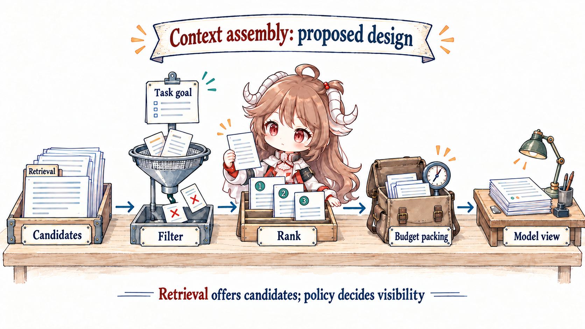
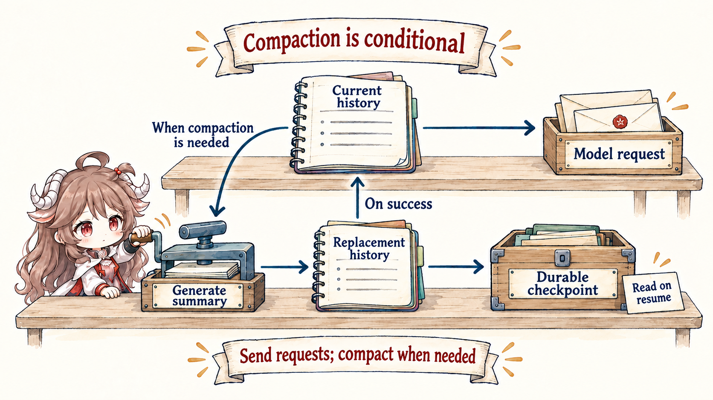

After this article: you should be able to explain how stored information becomes the final input to a model call, then design selection, budgets, checkpoints, and debugging records.
Source note: concepts draw on official Anthropic and OpenAI material. Implementation examples use Codex public source checked on September 20, 2026, with links pinned to that revision. Filters, TTLs, and structured checkpoints are proposed designs, distinguished below from implemented history normalization, truncation, and compaction. Model windows and service behavior still follow the target API documentation.
1. Understand context through the workbench story
1.1 Start with a wrong decision caused by old material
Imagine that yesterday’s payment-test log says the refund API is missing a field. The field was added this morning, but an Agent receives the old log and a long chat history instead of the current file and latest test output. It “fixes” a problem that no longer exists.
The model did not necessarily reason badly. The system prepared the wrong material. Context is the information actually available to the model for the current decision: instructions, the task, selected files, tool results, and relevant history. Context engineering is the work of selecting, ordering, updating, and compressing that material so the next step has enough evidence without being drowned in noise.
1.2 Think of a library, a candidate shelf, and a workbench
A library may hold every manual and old case file. A search first brings possible matches to a shelf. A worker then places only the few useful pages on the workbench. Agent systems have the same three levels:
- Memory or durable storage keeps information that may matter later.
- Retrieval finds possible material for the current task.
- Context is the final packet placed in the model request.
These words are often mixed together, but they describe different jobs. Saving a fact does not guarantee the next model call can see it. Finding a document does not guarantee it is current or useful. Context engineering makes that final choice.
A typical context packet may include the stable rules, current goal, completion criteria, latest observations, relevant code, and a short record of earlier decisions. It should not automatically include every message and full log.
This also clarifies its relationship to the previous article: the prompt is the relatively stable behavioral guidance inside the packet; context is the whole packet visible to this model call. They overlap but solve different problems. One makes the requirements clear; the other makes those requirements and current evidence visible at the right time.
2. Put the right material into the next decision
2.1 From storage to visibility: three separate choices
Separate three sets. A durable store retains facts that may matter later. A candidate set comes from retrieval, recent messages, and runtime state. The final input is what the request actually serializes for the model. A successful write proves the first set contains a fact; it says nothing about the third.

| Material | Keep durably? | Carry every turn? | Main risk |
|---|---|---|---|
| Stable system rules | Yes | Usually | Diverging copies |
| User goal and done criteria | Yes | Usually | Constraints lost during compaction |
| Full tool logs | Yes, for audit | No; select relevant spans | Noise displaces evidence |
| Current file content | Repository is durable | Select by task | Stale snapshots |
| Interim plan | Checkpoint when useful | Current phase only | Old plan resists new evidence |
| Secrets and sensitive data | Minimize by policy | Default no | Disclosure and authority expansion |
2.2 How one context packet is assembled
Anthropic frames context engineering as maintaining the optimal set of tokens for every step of an agent. “Optimal” does not mean highest vector similarity. It means useful for the decision now: relevant, sufficiently fresh, trustworthy, aligned with the goal, and worth the budget.

First consider a proposed assembler for the payment-test task. During verification, candidates include the goal, a stale error log, the current diff, the latest test output, and full chat history. The assembler removes the stale log, prioritizes the diff and latest test, accounts for fixed instructions and tool schemas, reserves output space, and only then spends the remaining budget on evidence.
In this design, the harness produces a fresh observation after the tests. If a full audit log is required, the runtime stores it separately, then adds the exit code, critical errors, and log reference to the candidates. The next assembly prioritizes the new result and explicitly decides whether it supersedes the old error. Removing stale logs and preserving complete logs both require implementation; the phrase “context engineering” does not establish that either already happens.
def assemble(candidates, phase, window, fixed_input, output_reserve):
usable = filter_by_scope_freshness_permission(candidates, phase)
ranked = rank_for_current_decision(usable)
budget = window - tokens(fixed_input) - output_reserve
return pack_without_splitting_evidence(ranked, budget)
verify_candidates = [
"goal", "old-error-log", "current-diff",
"latest-test-output", "full-chat-history"
]
# selected: goal + current-diff + latest-test-output2.2.1 Start with the next decision
Investigation, editing, and verification need different working sets for the same task. Investigation needs entry points and error logs. Editing needs the target symbol, callers, and constraints. Verification needs the diff, test commands, and failure output. A broad task query often returns material that is globally related and locally useless.
2.2.2 Filter by provenance and freshness
Similarity does not establish authority. A formal schema outranks an old discussion; a test run from this turn is fresher than a guess from three turns ago; a workspace file is closer to current truth than model memory. Each item should carry source, time or version, scope, and sensitivity so the assembler can apply deterministic checks.
- Produce the fact: the harness reads the current
payment.gosignature together with the workspace version. - Register a candidate: the runtime puts the content or reference, source, version, and scope into the candidate set.
- Check the candidate: the assembler verifies task relevance, freshness, and whether this model call may see the item.
- Put it in the request: only an item that passes those checks and fits the budget enters the final input; a later file change must invalidate it and trigger a fresh read.
{
"item": "payment.go: validateRefund(...) signature",
"source": "workspace_file",
"version": "git:7ad12f + dirty",
"observed_at": "turn:18",
"scope": ["refund-fix"],
"trust": "local-authoritative",
"ttl": "until-file-change"
}until-file-change is not a promise the text can enforce. The runtime must watch or compare workspace versions and invalidate the old item after a file changes; otherwise the TTL is only metadata.
2.2.3 Real requests must also preserve call/result pairs
Codex provides a more concrete path: before sampling, it clones current history and calls for_prompt rather than the generic candidate ranker above. When recording tool results, it truncates output payloads according to policy. Before sending the request, it fills missing results, removes outputs without matching calls, and strips image or audio content unsupported by the model. Named external tool outputs may stand alone and are exempt from the ordinary pairing rule.
For the payment test, a history entry saying “start the test” without a corresponding result must not imply a pass. A function call with no result receives a synthetic aborted output. This repairs the request structure; it neither reruns the test nor establishes why execution failed.
History: function_call(call_id="test-4"), no matching result
Request: function_call(call_id="test-4")
function_call_output(call_id="test-4", output="aborted")
Next: confirm test state; do not report verification as passedDebug stale logs at two levels: first check request validity and result completeness, then check whether the facts are current. These verified normalization functions do not provide TTL invalidation for arbitrary files or promise to delete every old log. Those remain separate selection policies to implement.
2.3 When everything does not fit, reserve space by purpose
“When tokens exceed N, drop the front” removes important limits at random. First account for fixed input such as instructions and tool schemas, then reserve output space, and only then assign the remaining budget to stable rules, current goals, recent observations, retrieved material, and history summaries. Budgets can adapt, but priorities must be explicit.
| Zone | Budget principle | Under pressure |
|---|---|---|
| Stable rules | Small, stable, high priority | Deduplicate; do not casually summarize |
| Goal and done criteria | Visible every turn | Compress structurally and validate fields |
| Current observations | Closer to the decision ranks higher | Keep error codes, key lines, and sources |
| Process history | Only state that still affects a decision | Summarize, mark invalid with a tombstone, or omit from the next request |
| Candidate documents | Pack for the current phase | Defer, page, or retrieve again |
| Output space | Reserve before calling | Do not fill input and hope completion fits |
3. Advanced: compact, recover, and debug long tasks
3.1 Long tasks need compaction without losing the task
As history grows toward the usable window, a long task may need compaction. A good compact state preserves the goal, constraints, confirmed facts, changes made, unresolved questions, next action, and evidence pointers. It can discard repeated explanations, full low-value logs, and hypotheses superseded by facts. Because summarization is lossy, the compact result must remain traceable to original records.

3.1.1 Protect state with a checkpoint schema
The fields below illustrate a useful shape; they are not fixed product fields:
- Goal: current task and done criteria.
- Constraints: product, safety, and user limits that cannot disappear.
- Confirmed: verified facts with recorded sources.
- Changed: files, external objects, and recorded effects.
- Open: unresolved questions and failed attempts with reasons.
- Next: the next action and why.
Free-form summaries are readable; structured checkpoints are recoverable and testable. Use both: structure protects invariants, narrative preserves causal explanation.
{
"goal": "Fix refund_should_reject_expired_order",
"constraints": ["Keep public APIs stable", "Run payment tests"],
"confirmed": [{"fact": "expired-order guard is missing", "ref": "workspace:payment.go"}],
"changed": ["payment.go"],
"open": ["payment tests have not run"],
"next": "run payment tests",
"evidence_refs": ["trace:test-run-4", "workspace:payment.go"]
}next. Removing constraints, open work, or result references respectively loses the allowed scope, creates false completion, or makes the original result impossible to inspect.3.1.2 Where the next request continues after compaction
Codex’s automatic-compaction entry point selects a token-budget path, remote compaction, or local compaction according to configuration. Follow the local summarization path here rather than treating it as universal across models and providers. It asks a model for a summary and builds replacement history, selecting retained user messages from newest backward within a budget and reinjecting initial context according to the trigger position. This neither restores every original conversation item nor automatically extracts the six-field checkpoint above.
Generating the summary is followed by an explicit state transition. replace_compacted_history replaces in-memory history and sends a Compacted record containing replacement_history to the persistence path. Recovery loads the selected compaction checkpoint before replaying later records. What must survive is both what the summary says and which history subsequent requests should continue from.
Compaction can itself exceed the window. On ContextWindowExceeded, the local path removes the oldest history item and retries while multiple input items remain. If it can no longer shrink the input it returns the error; other retryable failures have a retry limit. This fallback cannot guarantee lossless preservation of every goal and constraint, so critical state still needs separate checks. A compaction-completed event also means only that the compaction step ended, not that the payment test passed.
3.2 Retrieval success is not context success
Memory persists. Retrieval finds candidates. Context is the visible set for this call. A fact written to memory still needs retrieval, filtering, and budget to enter context. A tool result may enter the current context without becoming long-term memory.
Anthropic’s contextual retrieval highlights how isolated chunks lose document context and can be enriched before indexing. The runtime still has work after a hit: check version, permission, duplication, and relevance to the current phase. Good retrieval recall does not guarantee good final input.
3.3 When the Agent uses the wrong fact, trace the selection
When an agent uses the wrong fact, we need to ask whether the correct fact was among candidates, where it was filtered out, why the wrong one ranked higher, which version entered the request, and whether compaction changed meaning. Each call therefore needs a context selection log that can omit sensitive bodies while retaining those decisions.
- Item id, provenance, version, and selection reason.
- Deterministic filter reasons, entry or exit stage, and ranking score—not merely the final list.
- Token use by zone and every truncation event.
- Evidence pointers behind summaries and compact states.
- Redaction, authority, and retention policy for sensitive material.
4. Review context with five questions
| Review question | Failure prevented | Primary mechanism |
|---|---|---|
| What must the model know now? | Missing decisive evidence | Define the working set for the next decision |
| Where did each fact come from, and is it fresh? | Stale or false authority | Provenance, version, TTL |
| Why is it worth window space? | Noise and lost-in-the-middle effects | Zone budgets, rank, deduplication |
| Which invariants survive pressure? | Goal drift after compaction | Structured checkpoints |
| How will the next run reacquire it? | Treating a session as memory | Durable store plus replayable selection |
The outcome of context engineering is not “more tokens.” It is the right working set at every decision point. Next we move to what the model cannot see but what determines whether an action can occur: the runtime harness.
Official guidance and source
- Codex: history recording and request view
- Codex: local compaction and replacement history
- Codex: recovery from compaction checkpoints
- Anthropic: Effective context engineering for AI agents
- Anthropic: Introducing Contextual Retrieval
- OpenAI: Conversation state
- OpenAI: Prompt engineering
- OpenAI: Harness engineering